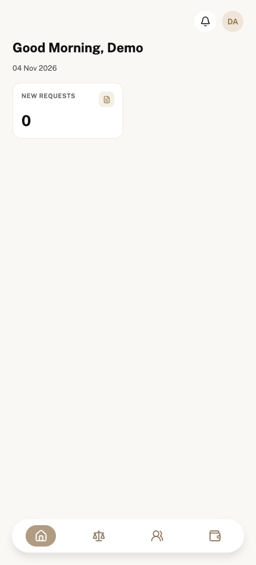


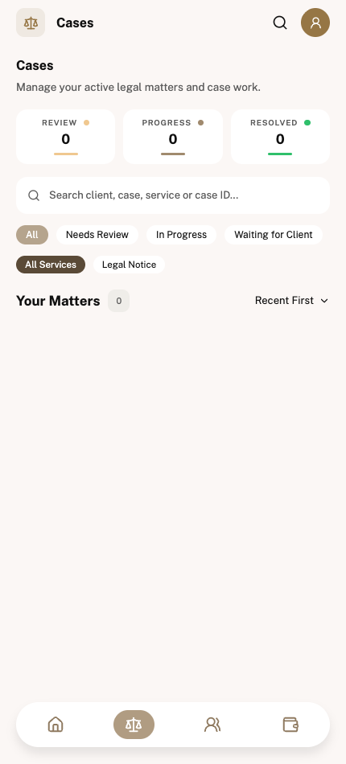

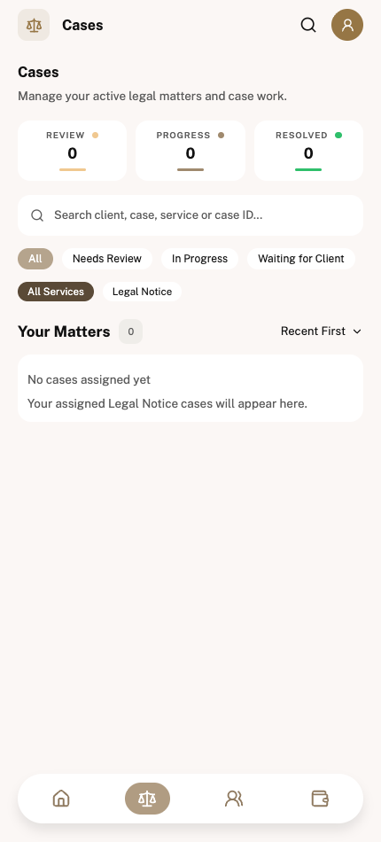

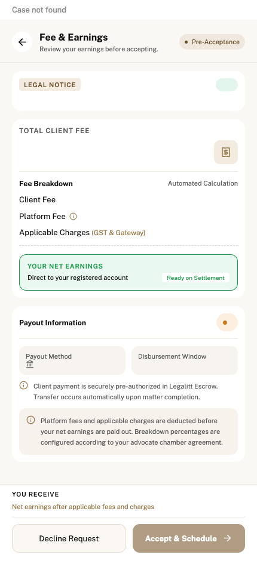
Real deployed demo accounts. The empty account has no cases. The populated account is Adv. Arjun Sharma. Partial, loading and error shots use browser-only response injection; the API and database are unchanged.
Findings and limitations · Every audited route (147) · Before audit · Checks and counts




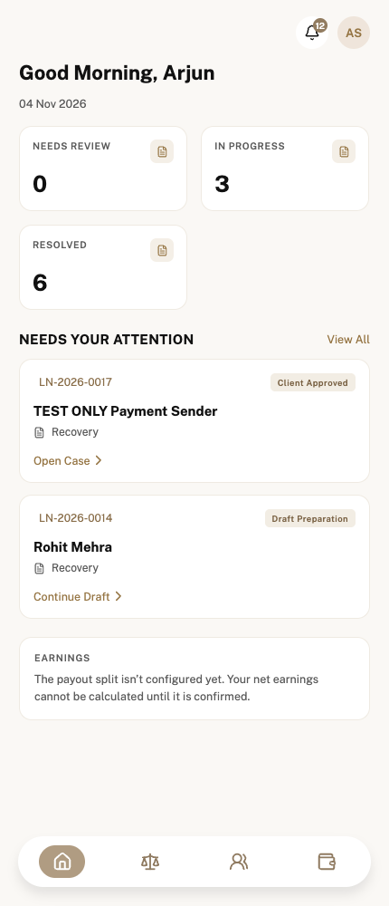
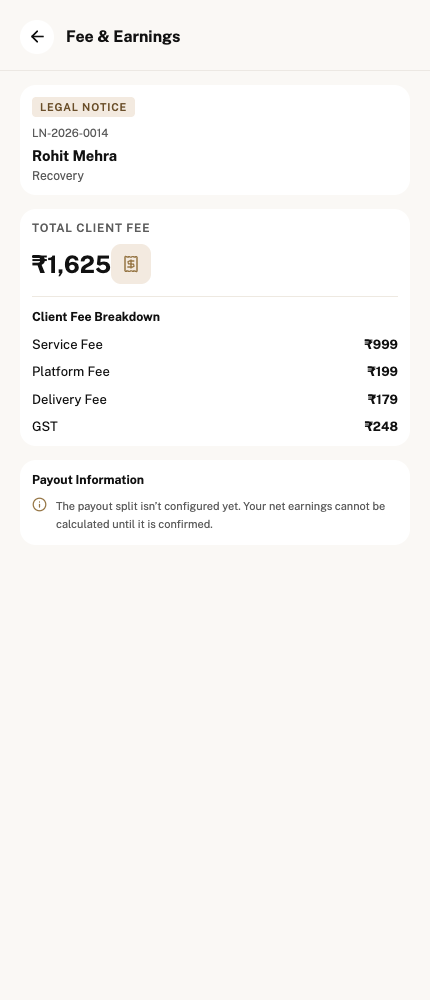
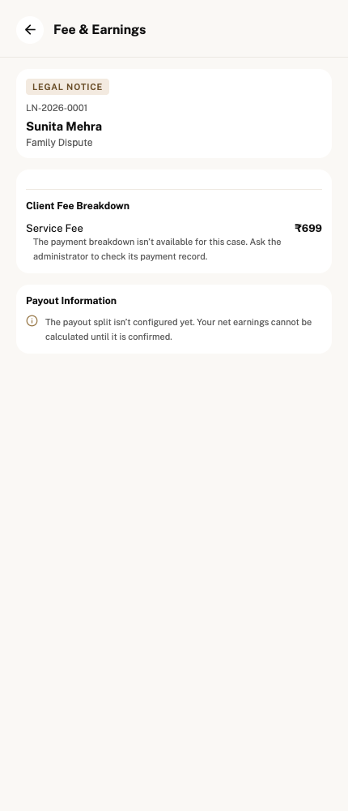
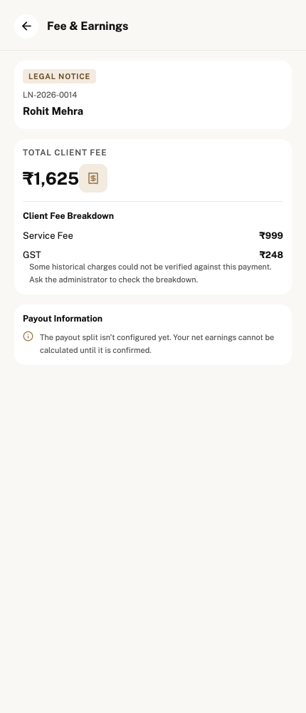

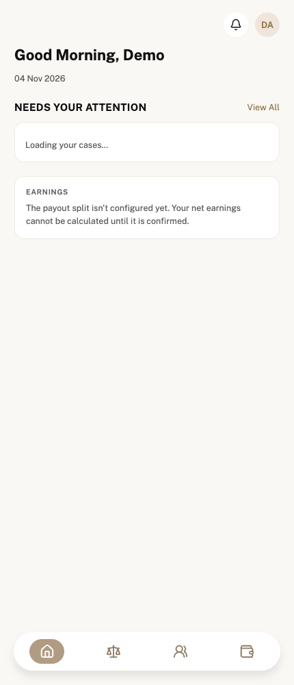
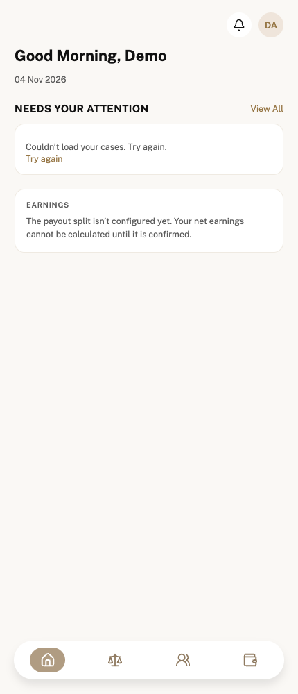
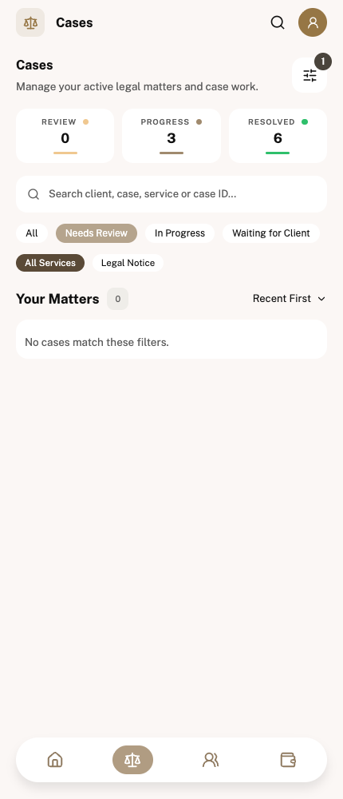
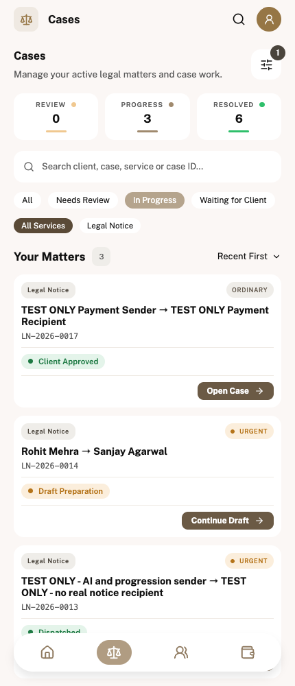
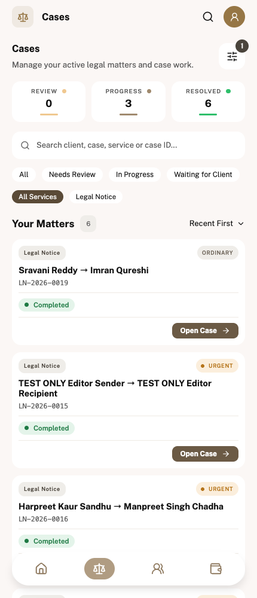
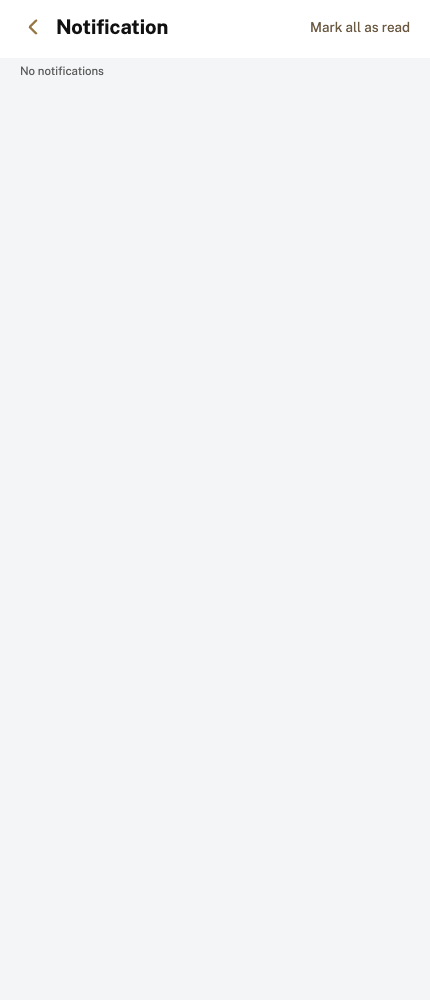
No supplied advocate Legal Notice completion / POD design exists. Other-service and account-wide fixture screens remain listed in the audit; they have not been represented as real account data or certified as complete.